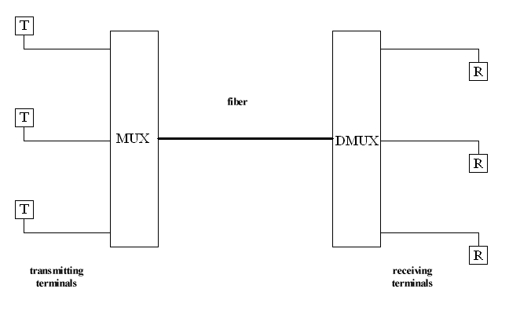

Definición
Multiplexación por longitud de onda
Se diseño para utilizar la capacidad de alta tasa de datos de fibra óptica la cual es mucho mayor que las de los cables metálicos.
WDM es conceptualmente la misma que FDM, exceptuando que la multiplexación y la demultiplexación involucran señales luminosas transmitidas a través de canales de fibra óptica.
Video 1. Multiplexación por longitud de onda.
Proceso
Figura 9. Multiplexación por longitud de onda.

Los sistemas de comunicación que utilizan como medio de transmisión una fibra óptica se basan en inyectar en un extremo de la misma la señal a transmitir (previamente la señal eléctrica procedente del emisor se ha convertido en óptica mediante un LED o Láser y ha modulado una portadora) que llega al extremo receptor, atenuada y, probablemente con alguna distorsión debido a la dispersión cromática propia de la fibra, donde se recibe en un foto detector, es decodificada y convertida en eléctrica para su lectura por el receptor.
El tipo de modulación y/o codificación que se emplea con los sistemas de fibra óptica depende de una serie de factores y algunas fuentes de luz se adaptan mejor a unos tipos que a otros. Así el LED, con un amplio espectro en el haz luminoso, admiten muy bien la modulación en intensidad, mientras que el láser -un haz de luz coherente adapta mejor a la modulación en frecuencia y en fase.
En distancias cortas, como es en el entorno de una oficina, la atenuación de la fibra (mínima para una longitud de onda de 1,55 (mm) y la dispersión (mínima para 1,3 (mm) no presenta un gran problema, pero a distancias mayores, como las que se requieren en los enlaces de comunicaciones a larga distancia, realmente lo es y se requiere el uso de amplificadores/repetidores que regeneren la señal cada cierta distancia.
Por ejemplo en los cables trasatlánticos se colocan repetidores cada 75 Km. que, primero, convierten la señal óptica degradada en eléctrica, la amplifican y la vuelven a convertir en óptica mediante un diodo láser, para inyectarla de fibra óptica, todo un proceso complejo y que introduce retardos debido a los dispositivos electrónicos por los que ha de pasar la señal.
Este inconveniente se evitaría si todo el camino pudiese ser óptico (all-optical), algo que ya es posible gracias a los resultados obtenidos, hace ya más de una década, por investigadores de la Universidad de Southampton, que descubrieron la manera de amplificar una señal óptica en una longitud de onda de 1,55 mm haciéndola pasar por una fibra de 3 metros de longitud dopada con iones erbio e inyectando en ella una luz de láser a 650 mm (fenómeno que se conoce como bombeo o pumping).
Ventajas y Características
Ventajas:- Permite la transmisión simultánea de señales a diferentes longitudes de onda sobre la misma fibra.
- Aumenta el ancho de banda.
- Solución económica para alcanzar capacidades muy altas.
- Permite alcanzar con amplificadores distancias muy altas.(cientos de kilometros).
- Baja pérdida de inserción.
- Aislamiento de canal de alta.
- Bajo PDL.
- Una fiabilidad excepcional y la estabilidad.
Aplicaciones
- Llegar a las redes.
- Metro WDM sistemas.
- Las redes empresariales.
- Telecomunicación.
- Red FTTH.